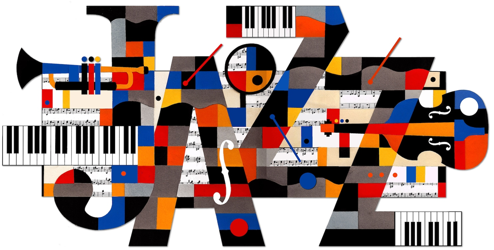

This project aims at providing information about jazz musicians born in Bologna. In this way, we want to highlight how the city could get advantage of having been the hometown of many jazz musicians to better promote the genre. In order to get a complete overview, we added an action to the textsearch showing the subgenres of the resulting musicians and some tables with further information.
